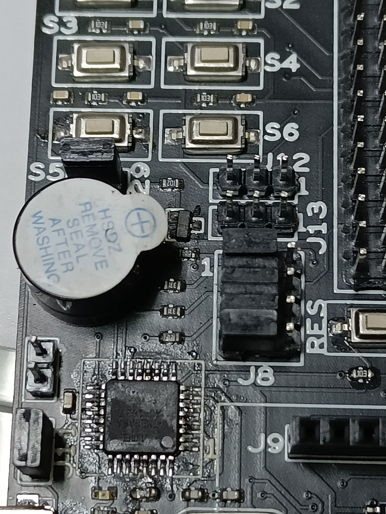

Getting Started with your First Experiment
- For our first program we will play with the buzzer which is already interfaced in Atmega2560 Development Board. Make sure that jumper J29 is connected. Following picture shows how jumper is connected and where it is located.
-
Buzzer connection with Atmega2560
- Buzzer :
PH2
- Buzzer :
-
Download Buzzer.c. Right-click on the hyperlink and select Save Link As... option to download.
-
Open the downloaded
Buzzer.cfile in Visual Studio Code (VSCode).Following code is present in
Buzzer.cfile:#define F_CPU 16000000UL // Crystal Frequency of Atmega2560 #include <avr/io.h> // Standard AVR IO Library #include <util/delay.h> // Standard AVR Delay Library int main(void) { DDRH=0XFF; // Initialize buzzer pin PH2 as output while(1) { PORTH = 0x00; // Turn ON the buzzer _delay_ms(1000); PORTH = 0xFF; // Turn OFF the buzzer _delay_ms(1000); } } -
Open terminal in VSCode using Terminal > New Terminal or just use shortcut Ctrl+Shift+`. Type the following command in the terminal to generate the
Buzzer.hexfile:avr-gcc -Wall -g -Os -mmcu=atmega2560 -o Buzzer.hex Buzzer.c -
You will see
Buzzer.hexfile generated in the same folder whereBuzzer.cfile is present. -
Next step is to flash hex file into the microcontroller. To do so we will use USBASP follow the steps given below:
- Make sure that the jumper J8 position is as shown below to select USBASP:

-
Connect Micro USB Cable at
J7(Flip the board, you will see "USBASP" written in the board) -
Open AVRDUDESS software by double clicking on the executable in windows and for Ubuntu users run the following command where executable is present:
mono avrdudess.exe -
From the Programmer (-c) dropdown select Any usbasp clone with correct VID/PID
-
From the MCU (-p) directly click on Detect which will automatically select the board details. After above two steps, your screen should look like following image.
-
From the Flash section click on three dots and select the
Buzzer.hexfile.
-
Finally click on Program to burn the hex file in the microcontroller. You'll see the following output in AVRDUDESS and buzzer should start beeping.
- Make sure that the jumper J8 position is as shown below to select USBASP: